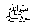

This section is about another very important part of Tabligh, which
through a little carelessness of the persons doing Tabligh, can do harm
instead of good. For instance, when trying to stop someone from
wrongdoing, or save him from a bad habit, you should advise him alone
and not openly disgrace him in front of others. A Muslim's respect and
honour is very valuable; as explained in the following sayings of
Rasulullah 
It has been reported by Abu Hurairah (Radhiyallaho anho) that Rasulullahsaid: "Whoever hides the sins of a Muslim, Allah Ta’ala will hide his sins in this world and in the Hereafter: and Allah helps His servant so long as he helps his brother Muslim." (Targheeb)
It has been reported by Ibn Abbaas (Radhiyallaho anho) that Rasulullahsaid: "Whoever hides the wrong-doings of a brother Muslim. Allah will hide his wrong-doings on the Day of Qiyaamah, and whoever will tell others about the wrong-doings of a brother Muslim, Allah will inform others about his wrong-doings to the people, so much so that he will be disgraced sitting in his own house." (Targheeb)
Similarly, there are many other Ahaadith on this subject, therefore, the callers to Allah Ta’ala should always hide the faults and look after the respect of our brothers in Islam. Another Hadith says: "Whoever does not help his brother Muslim when he is being disgraced, Allah Ta’ala will not worry about him when he himself is badly in need of help."
In many Ahaadith, the disrespecting of a Muslim has been strictly made haraam; therefore, the people doing Tabligh should be very cautious. Even advice should be given in such a way that the sinner is not disrespected; otherwise the advice will cause the opposite effect. In short, the sinners must be corrected according to the command of Allah Ta’ala, but let us not forget the instructions given above to respect every Muslim.
A person doing Tabligh must be polite and kind when he speaks to people because bad manners and bad words have the opposite effect. Once, a person giving advice spoke harshly to the Khalifa Ma'moon ar-Rasheed. He said: "Please be polite and kind to me, for Firaun was a worse person than me, and Hazrat Moosa (Alayhis salaam) was a much better person than you, but when Hazrat Moosa and Hazrat Haroon (Alayhis salaam) were sent to advise Firaun, Allah Ta’ala said:
"Speak to him in soft words so that he may turn to the Right Path, or maybe he will fear Me!" (Taahaa-44)
The people doing Tabligh should always be kind and polite towards their listeners, and should treat them as they would themselves like to be treated.